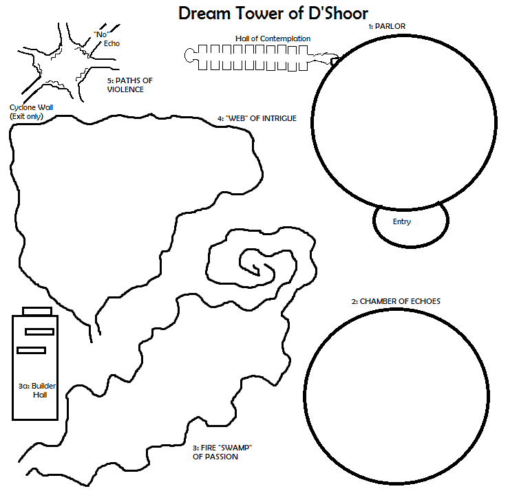

Overview
SYSTEM: D20
An ancient tower that was used by a master wizard to steal knowledge resurfaces in a plot to take something from the PC’s. The tower, which many believed had been destroyed when the wizards long list of enemies caught up to him, was discovered by a powerful being, who now uses it in a mercenary like fashion. The enemies of the PC’s have employed this against them, trying to steal a bit of knowledge.
Location: [Setting] This can be set anywhere.
Premise: How do the characters get involved?
Story and Progress: What is expected to happen during the adventure?
> Outcome(s) > What is the end goal? Any potential other results?
Challenges: Monsters and type, traps, role-playing pitfalls, physical costs
Rewards: Keeping the knowledge/memories the [PC Enemies] are trying to take. Powers granted by knowledge.
Background
Entire background of events leading up to the point the characters enter the picture.
What the Characters Know: Common knowledge and Uncommon [what checks are required?].
Hidden Knowledge: What is completely unknown to the players (and perhaps to the NPC’s!).
Timeline
When: season
- Characters enter the picture…
Introduction
Narrative for the characters to get them into the adventure.
MIND HOOKS
Mind Hooks (MH) are the barbs tearing at the knowledge/memory of the PC’s. They are the weapon used to take this from the PC’s forcefully as they travel through the tower’s challenges. The GM designates a particular piece of knowledge or memory, a desire or even fear as the MH Target. The GM decides what the target is. When a PC dies in the adventure, they do not die permanently – they have the knowledge/memory taken from them… replaced by a memory of hooks tearing their flesh – a memory to be avoided! When they dwell on it, they can feel the pain [and take 1 HP damage, but recall nothing]. When the PC’s move through the next passage, their body will reanimate and be teleported to the PC’s next location (if it is not being carried by their comrades).
You suddenly feel a strange presence in your thoughts. It first whispers, then shouts, drowning out everything. Fear and anxiety replace your calm and focus. It leaves you shuddering and momentarily you are unsure of who or where you are. Then reality wrenches back into focus. Did you die?
If all party members have Mind Hooks target taken from them…
Suddenly the air clears… like a fog receeding from your brain. You feel like the weights you have accumulated have dropped from your shoulders. You find yourself in a literal fog, as the airs clear everyone is together. The doorway ahead begins to take shape – a door like all the others in the tower. Then it shines like a beacon. You smell and hear the senses of home. The sun is out, it has just stopped raining. Nothing bars your path as the door opens and you can march clear of this thrice cursed place. The world outside beckons…
You turn around and there is nothing. No tower, no door. Looking around, there is no home. You are where you left of, as far as you know. The reality of everything is like a dream, and you struggle to hold on to the memories. They are quickly fading, you look around…
Effects Inside the Tower
- When Creatures Die: In about a round, their bodies and items begin to fade, like a dream upon waking.
- If a party members dies multiple times: Each death after the first is a level of Exhaustion that does not fade until the party has left the tower.
- RESTING: Long rests only recover the equivalent of a Short Rest
1: Parlor
Inside is a magnificent parlor. Its far bigger than the exterior of the tower.
- 8 Troglodyes: [These represent the thoughts turned ugly of D’Shoor] 4 of them will make a defensive barricade (partial cover) while the other 4 throw javelins (they have no range penalty!) and attack
1 on a D6: When attacked, these ugly thoughts turn bad dreams; All attacks against them that round have Disadvantage and they gain D8/4 HP.
- Boggle [The mischievous thoughts of D’Shoor] – armed with left over alchemist kit supplies
The Dream Stealer Chair: For those who willingly gave up their knowledge, resigned to the “inevitable”. Looks like a modern electric chair. Wooden. Marks on bottom of arms from nails biting into it. No stains, but was once painted – worn on the front, still gilt edging on back. Will not burn, cannot be destroyed.
> The “kit” > In a old padlocked box (DC 5 to pick) is the kit to go with the chair (clips, tubes, philters, distillers, burners, etc.): If destroyed, it is destroyed for the time the PCs remain; burning releases immediate cloud of residual chemicals [D6/3 Acid damage and 1 level exhaustion]. A character who knows what they are doing (Alchemy) can construct 1-3 potions with whats left
Entry to Hall of Contemplation: There was once a massive tapestry that covered this passage, but it is threadbare and torn and laying on the ground. A rough stone passage goes endlessly into darkness, straight away from the room you are in.
1a: Entry
1b: Hall of Contemplation
After you walk what seems like an hour down a rough, cold dark hallway, you enter into a worked stone area. Ahead is a long hallway with 3m alcoves on either side. You cannot see the room you came from behind you, there is no light there but the rough passage remains.
There are 20 alcoves, 7 filled on the left and 8 filled on the right. They are of Mages, sorcerers, bards, and priests.
Statues: These are the primary victims of D’Shoor – he immortalized his conquests this way. There is a 1 in 12 random chance a PC might recognize a character from history/legend. Each statue whispers something, but it cannot be made out. It is its secret, the knowledge that was stolen from it.
- :
- :
- :
- :
- :
- :
- :
- :
- :
- :
- :
- :
- :
- :
- :
The Tower’s Brain
Statue: Ahead is a pedastal beyond an arch with a statue of some monstrous and fantastical creature. [Describe the creature portrayed as a Nothic] It was obviously richly colored once, but now only the single great, green eye has much of any color left – the rest looks to have aged and flaked off over time. As you get closer, you swear you hear a voice whispering something to you, but you cannot make it out.
DC 10 Perception; IF they succeed, the PC thinks the eye is following them. Otyher checks to swear the eye blinked, or they saw the statue breath. Its all an optical illusion with shadows – it all disappears if the entire area is flooded with light.
Hidden Compartment: DC 21 check; the lore book with the entire instructions, set up, and how the “dream stealer” chair was built – including the alchemist kit.
At the heart of the tower is the trapped brain of a Nothic. This brain was once a wizard of a far realm, exiled into the Ethereal for her pursuits into the forbidden arts. D’Shoor came upon this entity purely by happenstance in his attempts to use the Border Ethereal to gain access long locked vaults of knowledge.
- Identifying: DC 20 Arcana check; If a PC tries to make contact with it, it has slipped some of its bonds. If the PC speaks an elvish language,
it can communicate in that – it can only communicate in simple one word answers. If a PC makes a DC 20 Persaude check, it will be tempted to help them. If so, it gives them a memory of its own – the guilt of D’Shoor… the creation of the Builder’s Hall from the spirits of the tower builders.
It will tell the PC’s that the builders can help them escape without facing the full trials of the tower. IT will reveal this memory if the PC’s pay the price = Best weapon, knowledge of a Rare spell (PC can forever not use it/understand it), powerful magic item, etc.
2: Chamber of Echoes
Hall of Echoes: If the PC’s manage to “look past the violence” that D’Shoor used to construct his legacy, here they will find the echoes of memory. It whispers “no” in many languages – many not recognized by the PC’s. IF the PCs press on, they become disoriented and stumble. Until they come to a clam place, and a voice says “Ahead lies the echoes of all the worlds machinations. Beyond the door is the remnants of the mental violence you must endure… is this your choice!?” [echoes]. IF the PC’s say yes, then they are covered by a massive swarm of bats, blocking out all the light and confusing them. “The Path of Echoes has been chosen!”
Ahead a door looms out of the darkness. It is a plan and simple door.
It is locked with a simple padlock (DC 5; regenerates after PC’s pass beyond). It can also be broken.
As you open the door, you feel like the entire floor is tilting up, pouring you through the doorway into darkness.
DC 10 SAN vertigo check (SAN) or throw up (1 HP) violently.
The floor flows like water ahead. Strange colors permeate the air all around you, creating a room like feeling. The floor bounces and flows like a choppy sea. Through the turmoil, you can see something about 100 fee opposite you that might be a door. You are assaulted by voices, voices that echo all around you. You cannot make out the details, just that its several languages.
CROSSING: PER DC 10 checks to see the actual door, otherwise, the PC’s will be lured to the echo of the door. As the PC’s cross, they can choose to go swift or slow. They can also choose to stop and listen to the echoes. If they stop, they will be assaulted by the echoes for D4/2 Thunder damage. They must also make an additional slow or fast check to pick up where they left off. Any PC’s crossing as a group must make a DC 20 Strength check or be bucked loose from their comrades (each “chained” PC grants +1 to DEX checks per); shackled or tied closely together characters all suffer the same effects if one fails.
Careful and Slow (walk): 4 checks @ DC 5 Dexterity or fall and Mind Hooks target is taken.
FALL = You stumble and it seems like an eternity. Spinning, you are violently thrown upward like a rag doll as the floor first bucks then falls out from underneath you. The ground rushes up, and your body crashes against it. You can feel the pressure behind your eyes as the pop out of your skull, ribs puncture your lungs and you taste your own blood as you struggle to suck air. Screaming, you rear up to find you can stand, and you are whole in an instant. Refocusing, you continue to try and reach the door.
Carefree and Fast (run): 1 check @ DC 11 Dexterity or fall and Mind Hooks target is taken.
Failure = 2D6/7 damage (let PC roll their own!) and SAN check DC 5 (or damage > 7), fail = 1 damage is permanent!
Listening to the Echoes
The PC must stop in the chmaber as they are corssing. Just by stopping they catch that the shispers are all the promises made to conspirators –
knowledge, wealth, power, magic, material possession… To focus on one in particular, they must make a combined SAN and CON DC 12 check’ if so, they can some knowledge or insight randomly. IF the check is a Major result or better, roll twice and pick the best one for the character (or if a random choice encompass a better suited result, choose that). Bonuses and powers are permanent.
- +1 to a random Skill
- +1 to a random ability check
3: Swamp of Passions
- Gout
- Pit
- Blister
- Blossum
Spotting the Builders Pit: Perception DC 10 check to spot an unusual amount of gouts of flame in an area. It will take 2 turns to get closer
3a: Builder Hall
SAN DC 10 to resist drinking the first night… Rabit’s Bath Mead:
4: Web of Intrigue
5: Paths of Violence
Each tapestry tells a story of D’Shoor and his prowess
- A man studying a book: Reading a tome of forbidden knowledge that could kill you
- A man in a garden: Tending rare and magical plants that could kill you
- A man fighting an orc general: A sash on the ground indicates a challenge and personal combat to the death
- A man playing chess with a demon: Above them hangs a scales with a soul in the balance
- [Tapestry of Home] A man fighting a dragon: The dragon is being subdues. Edge smaller pictures show progress of the battle
LEAVING: If the PC’s every return to the chamber and all have been successfully targeted by the Mind Hooks, the Tapestry of Home appears: This is a tapestry with an image of the PC’s home. There is a breeze they can feel coming from it, and can smell the familiar scents of home. The tapestry proves to be a doorway of some kind. The PC’s walking through it are returned to where they entered the tower – regardless of their “home” portrayed in the tapestry.
5a: Snake Peoples
Basics: Path winds until around a corner it opens into a chamber – they way back is empty magical darkness. The chamber is about 40m in diameter. Above the entry arch, is a small gallery with a duplicate of the statues found in the Hall of Contemplation – seated and watching, carved into the rock.
Feeling of snakes infesting your abdomen and chest, bursting out in a hundred tiny wriggles and bites…
Leaving: If the PC’s are all killed, they wake up back in the Path of Violence chamber; otherwise the path they came in on takes them back to the entry path in the Path of Violence chamber…
5b: Orcs
Basics: Path winds until around a corner it opens into a chamber – they way back is empty magical darkness. The chamber is about 40m in diameter. Above the entry arch, is a small gallery with a duplicate of the statues found in the Hall of Contemplation – seated and watching, carved into the rock.
They stomp on your head, bones crunch and you cut your own tongue off, gouge eyes….
Leaving: If the PC’s are all killed, they wake up back in the Path of Violence chamber; otherwise the path they came in on takes them back to the entry path in the Path of Violence chamber…
5c: Coatl
Basics: Path winds until around a corner it opens into a chamber – they way back is empty magical darkness. The chamber is about 40m in diameter. Above the entry arch, is a small gallery with a duplicate of the statues found in the Hall of Contemplation – seated and watching, carved into the rock.
Constrict you to death, ribs snap, blood bubble…
Leaving: If the PC’s are all killed, they wake up back in the Path of Violence chamber; otherwise the path they came in on takes them back to the entry path in the Path of Violence chamber…
5d: Ghouls
Basics: Path winds until around a corner it opens into a chamber – they way back is empty magical darkness. The chamber is about 40m in diameter. Above the entry arch, is a small gallery with a duplicate of the statues found in the Hall of Contemplation – seated and watching, carved into the rock.
They rend your guts and eat them, tugging at your entrails…
Leaving: If the PC’s are all killed, they wake up back in the Path of Violence chamber; otherwise the path they came in on takes them back to the entry path in the Path of Violence chamber…
Optional: The Briers of Downfall
[Not necessary but can be added if the GM desires.] This is the fading memories of D’Shoor’s ambition and his downfall and eventual death.INSERT: After the characters clamber to the ledge in the Web of Intrigue and find the path out, it should lead into a forest of brambles with prickly briers and vines everywhere.
- Bind: Each life ruined is a blade of grass that hinders movement forward.
- Prick: Each plot is 10 enemies, 10 barbs to tear at the flesh.
Thorn Whip -> - Strangle: Each death in his plots is another course at the table… to choke on.
Piper: Otto’s Dance forces PC’s into one of the hazards…
Key Characters
Key Character Template
Who they are…. and their role in it all.
Motivations: What does the character hope to achieve?
> Aversion(s) > What do they hope to avoid or will not do?
